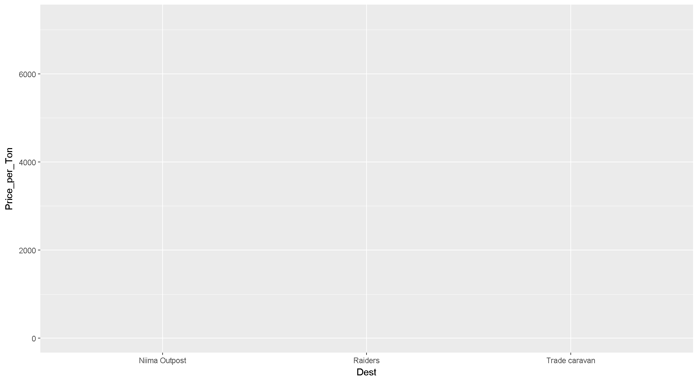
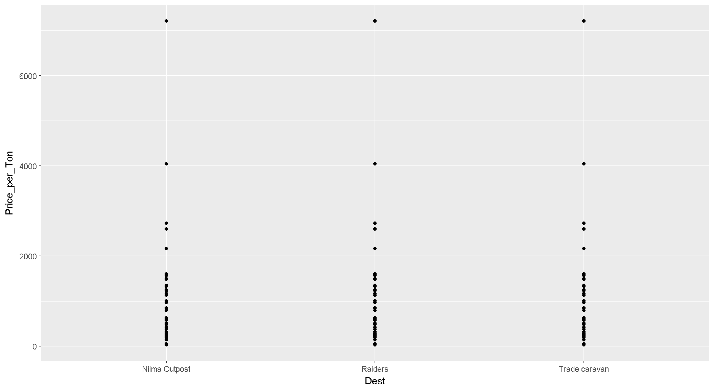
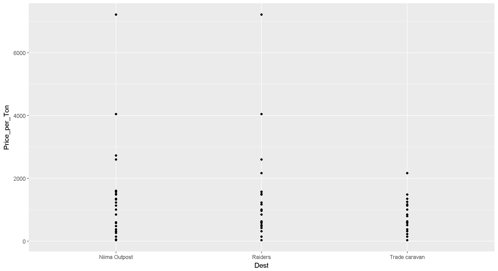
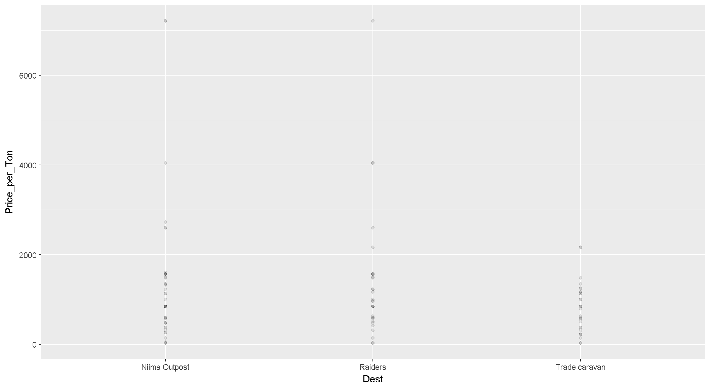
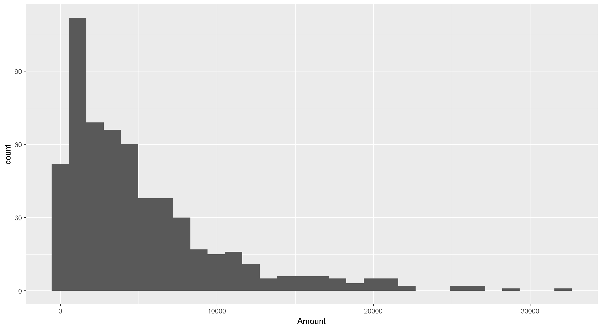

R Training | Day 2
1 | Make a ggplot() sandwich

The 3 ingredients of a ggplot
1. The base plot
ggplot(scrap)
Note when we load the package it’s
library ("ggplot2")but when we use the function, it’sggplot(scrap)without the 2 following ggplot. It’s annoying, but that’s the way it is.
2. The X, Y (aesthetics)
Aesthetics are the components from the data that you want to use in the chart. These also determine the dimensions of the plot.
ggplot(scrap, aes(x = Dest, y = Price_per_Ton)) 
3. The layers and (geometries)
ggplot(scrap, aes(x = Dest, y = Price_per_Ton)) +
geom_point()
1.0.1 Pro-tip!
When you add more layers using
+, remember to place it at the end of each new line.
# This will work
ggplot() +
geom_point()
# BUT this will give you a nasty error message
ggplot()
+ geom_point()Exercise
Try making a scatterplot of any two columns.
Hint: Numeric variables will be more informative.
ggplot(scrap, aes(x = ?column1, y = ?column2)) + geom_point()1.1 Scatterplots and point charts.
Let’s select only scrap from Outskirts using filter().
filter(scrap, Origin == Outskirts)1.1.1 To repeat the earlier chart with the filtered data use the %>% pipe.
filter(scrap, Origin == "Outskirts") %>%
ggplot(aes(x = Dest, y = Price_per_Ton)) +
geom_point()
1.1.2 Add transparency to the points.
filter(scrap, Origin == "Outskirts") %>%
ggplot(aes(x = Dest, y = Price_per_Ton)) +
geom_point(alpha = 0.1)
1.1.3 Add a regression line.
We can keep adding layers! You can build your plot sandwich as big as you like.

Exercise
Show solution
Here’s some code to help.
1.2 Histograms
Now let’s make some histograms showing how the total number of different items.
ggplot(scrap, aes(x = Amount)) + geom_histogram()
To show the changes per decade we can break the years into groups of 10.
ggplot(movies, aes(x = title_year)) + geom_histogram(binwidth = 10)1.2.1 Break it down by movie_color
You can assign different aesthetics to variables in the data set. The example below sets the fill color to variable movie_color. This will color code each color type, one color for black and white movies and one for color movies.
ggplot(movies, aes(x = title_year, fill = movie_color)) +
geom_histogram(binwidth = 10)1.2.2 Move the bars side-by-side instead of stacked
It’s difficult to see what’s going on with the black and white films. Let’s split the colors apart using position_dodge().
ggplot(movies, aes(x = title_year, fill = movie_color)) +
geom_histogram(binwidth = 10, position = "dodge")1.2.3 Split into separate charts for black and white vs. color
Maybe it would work better to use two separate charts. For that we can use facet_wrap().
ggplot(movies, aes(x = title_year, fill = movie_color)) +
geom_histogram(binwidth = 10) +
facet_wrap(~ movie_color)1.2.4 Free y-axis
That is almost good. It’s still hard to see the changes in black and white films. Let’s make the y-axis independent for each group using scales = "free_y". Type ?facet_wrap to see more options.
ggplot(movies, aes(title_year, fill = movie_color)) +
geom_histogram(binwidth = 10) +
facet_wrap(~ movie_color, scales = "free_y")Note: When the scales are not uniform, make sure to point this out to your readers. Otherwise people might assume the scales are the same. Then they would think there are just as many black and white films as color movies.
Exercise
Make a histogram of the number of movies by decade with separate fill colors for each content_rating.
Decide which is the best way to present the bars: stacked, side-by-side, or on separate charts.
Show solution
# Stacked
ggplot(movies, aes(title_year, fill = content_rating)) +
geom_histogram(binwidth = 10)
# Side by side
ggplot(movies, aes(title_year, fill = content_rating)) +
geom_histogram(binwidth = 10, position = position_dodge())
# Separate charts
ggplot(movies, aes(title_year, fill = content_rating)) +
geom_histogram(binwidth = 10) +
facet_wrap( ~ content_rating)
# Free scale it
ggplot(movies, aes(title_year, fill = content_rating)) +
geom_histogram(binwidth = 10) +
facet_wrap( ~ content_rating, scales = "free_y")2 Day 2 homework
- Load some data into R from a recent project of yours.
- If you have data in Excel, you can export a .CSV file by choosing “Save as” and selecting CSV from the file type menu.
- Create 2 types of plots using the data.
- Paste the function
runif(1)into your console.- If the number you get is bigger than
0.2, email your charts to the rest of the class.
- If the number you get is bigger than